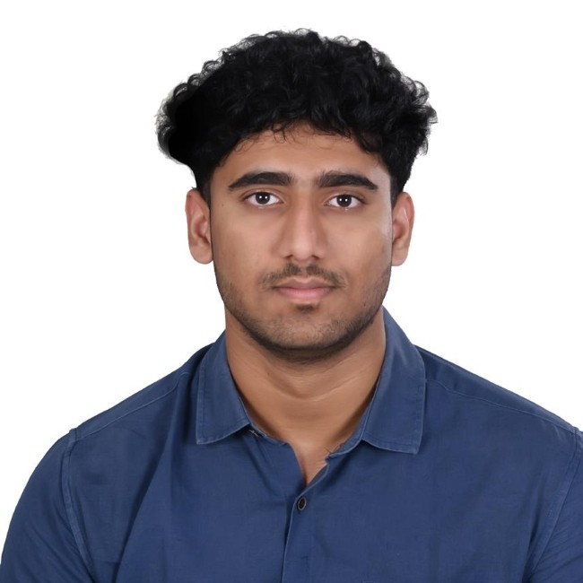

Data-focused engineer with hands-on experience in analytics and machine learning, driven to solve real-world problems with data.
Get to know my background and passion
I am a data-driven Computer Science graduate specializing in AI & Machine Learning, with a strong interest in data analytics and applied machine learning. I enjoy working with data to uncover patterns, build predictive models, and translate complex information into clear, actionable insights.
With expertise spanning multiple domains, I bring a unique perspective to every project. My approach combines technical proficiency with creative thinking, allowing me to tackle complex challenges with innovative solutions.
I’m currently seeking opportunities as a Data Analyst or Data Scientist where I can contribute to solving real-world problems using data, while continuing to grow in analytics, machine learning, and data-driven decision-making.

My academic journey and qualifications
Specialized in Data Science. Currently in my second semester of the program.
Comprehensive foundation in Data Analytics, Machine Learning, and mathematics. Graduated with honors. Senior project was a consultancy project for a Private Limited company.
My professional journey and achievements
Technologies and tools I work with
Showcasing my recent work and achievements
A Retrieval-Augmented Generation system that helps users access and understand computer science research papers from arXiv.
Analyzing sentiments from social media text data using Natural Language Processing (NLP) and Machine Learning techniques.
Machine learning model to forecast renewable energy generation from solar and wind sources, improving prediction accuracy by 15%.
Research contributions and academic work
This paper presents a comparative analysis of various machine learning models to identify the most effective approach for automated waste classification.
Developed an ensemble model incorporating three machine learning models: Random Forest regressor, XG Boost Regressor, and Long Short-Term Memory Network (LSTM) for predicting future energy consumption.
Get a comprehensive overview of my qualifications and experience
Download PDF Resume